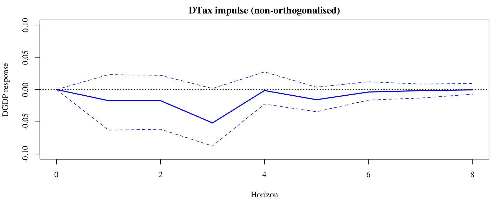
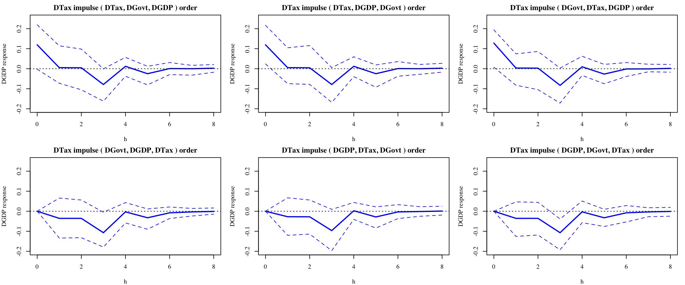
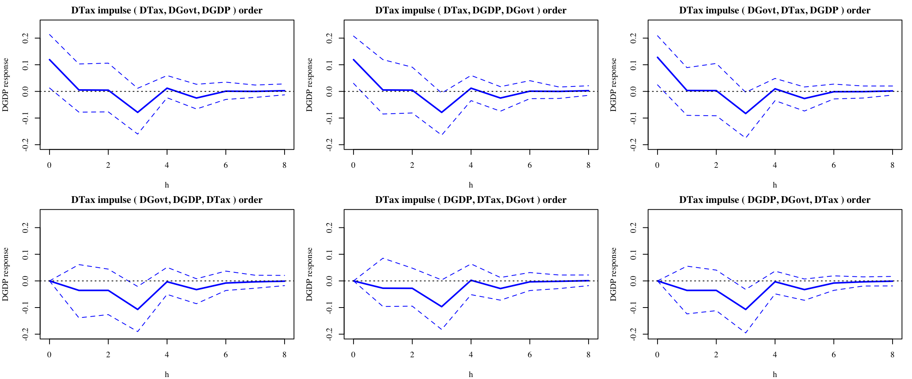

My consultations for Weeks 11 and 12:\[\boxed{\;\textsf{Wednesday 3pm-4pm, FBE 455}\;}\]
This tutorial: Impulse Response Analysis with VAR
In this tutorial, we estimate and interpret impulse responses from VAR models, apply Cholesky factorisation to identify structural shocks, and examine how tax policy changes influence GDP growth under different variable orderings.
Activities
Exercise 1: VAR Estimation, Cholesky factorisation and Interpretation
Exercise 2: Sensitivity of Impulse Responses to Cholesky Ordering
Exercise 3: Practical Application - Effect of Tax Policy on Economic Growth
Initialisation
Refer again to the data file TGY.csv, which contains the data from Lecture 11 and Self-directed Activities 11 on the U.S. real per-capita quarterly time series (1980Q1-2024Q2).
Estimate the VAR(3) model for the growth rates of \(\operatorname{Tax}_{t}\), \(\operatorname{Govt}_{t}\) and \(\operatorname{GDP}_{t}\), and obtain the conditional variance matrix and its Cholesky factorisation.
What is Cholesky factorisation, and why would we want to use it?
Our goal: We would like to obtain a set of mutually uncorrelated (orthogonal) structural shocks that can be interpreted causally, so that we can trace how a unit of shock to one variable affects the others over time. \(\to\) Make IRFs economically meaningful
Exercise 1
Estimate the VAR(3) model for the growth rates of \(\operatorname{Tax}_{t}\), \(\operatorname{Govt}_{t}\) and \(\operatorname{GDP}_{t}\), and obtain the conditional variance matrix and its Cholesky factorisation.
What is Cholesky factorisation, and why would we want to use it?
Consider the VAR(3) model: \[\mathbf{Y}_{t}=\nu+\Phi_{1}\mathbf{Y}_{t-1}+\Phi_{2}\mathbf{Y}_{t-2}+\Phi_{3}\mathbf{Y}_{t-3}+\mathbf{U}_{t}\]
The data implies that \(\mathbf{U}_{t}\) follows a variance-covariance matrix \(\mathbf{\Sigma}\):
where \[\mathbf{U}_{t}=\begin{bmatrix}
U_{Tax,t}\\
U_{Govt,t}\\
U_{GDP,t}
\end{bmatrix}\]
Exercise 1
Estimate the VAR(3) model for the growth rates of \(\operatorname{Tax}_{t}\), \(\operatorname{Govt}_{t}\) and \(\operatorname{GDP}_{t}\), and obtain the conditional variance matrix and its Cholesky factorisation.
What is Cholesky factorisation, and why would we want to use it?
Consider the VAR(3) model: \[\mathbf{Y}_{t}=\nu+\Phi_{1}\mathbf{Y}_{t-1}+\Phi_{2}\mathbf{Y}_{t-2}+\Phi_{3}\mathbf{Y}_{t-3}+\mathbf{U}_{t}\]\[\mathbf{U}_{t}=\begin{bmatrix}
U_{Tax,t}&
U_{Govt,t}&
U_{GDP,t}
\end{bmatrix}^{\top}\]
The problem:
The conditional var-cov matrix \(\mathbf{\Sigma}\) usually suggest that \(U_{Tax,t}\), \(U_{Govt,t}\) and \(U_{GDP,t}\) are correlated (in a cross-sectional sense).
This means that \(U_{Tax,t}\) (disturbances to total tax revenue) might not solely represent shocks originated from \(\operatorname{Tax}_{t}\), without loss of generality.
\(\implies\)\(U_{Tax,t}\) might also contain shocks from the rest of the variables (i.e. from \(U_{Govt,t}\) and \(U_{GDP,t}\))
Exercise 1
Estimate the VAR(3) model for the growth rates of \(\operatorname{Tax}_{t}\), \(\operatorname{Govt}_{t}\) and \(\operatorname{GDP}_{t}\), and obtain the conditional variance matrix and its Cholesky factorisation.
What is Cholesky factorisation, and why would we want to use it?
Consider the VAR(3) model: \[\mathbf{Y}_{t}=\nu+\Phi_{1}\mathbf{Y}_{t-1}+\Phi_{2}\mathbf{Y}_{t-2}+\Phi_{3}\mathbf{Y}_{t-3}+\mathbf{U}_{t}\]
The data implies that \(\mathbf{U}_{t}\) follows a variance-covariance matrix \(\mathbf{\Sigma}\):
where we assume that the elements of \(\mathbf{U}_{t}\) is a linear combination of three uncorrelated (orthogalised) and standardised shocks of mean 0 and variance 1:\[\mathbf{U}_{t}=\begin{bmatrix}
U_{Tax,t}\\
U_{Govt,t}\\
U_{GDP,t}
\end{bmatrix}=\color{blue}{\begin{bmatrix}
c_{11} & c_{12} & c_{13}\\
c_{21} & c_{22} & c_{23}\\
c_{31} & c_{32} & c_{33}
\end{bmatrix}\begin{bmatrix}
\varepsilon_{Tax,t}\\
\varepsilon_{Govt,t}\\
\varepsilon_{GDP,t}
\end{bmatrix}=C^{\top}\varepsilon_{t}\quad\textsf{where}\quad\operatorname{var}(\varepsilon_{t})=I}\]
Exercise 1
Estimate the VAR(3) model for the growth rates of \(\operatorname{Tax}_{t}\), \(\operatorname{Govt}_{t}\) and \(\operatorname{GDP}_{t}\), and obtain the conditional variance matrix and its Cholesky factorisation.
What is Cholesky factorisation, and why would we want to use it?
Given that \(\operatorname{var}(\varepsilon_{t})=\mathbb{E}(\varepsilon_{t}\varepsilon_{t}^{\top})\), then:
\[\operatorname{var}(\varepsilon_{t})=\mathbb{E}(\varepsilon_{t}\varepsilon_{t}^{\top})=I=\begin{bmatrix}1 & 0 & 0\\ 0 & 1 & 0\\ 0 & 0 & 1\end{bmatrix}\] the off-diagonal entries are 0 \(\to\) shocks are uncorrelated (orthogonal)
Exercise 1
Estimate the VAR(3) model for the growth rates of \(\operatorname{Tax}_{t}\), \(\operatorname{Govt}_{t}\) and \(\operatorname{GDP}_{t}\), and obtain the conditional variance matrix and its Cholesky factorisation.
What is Cholesky factorisation, and why would we want to use it?
Given that \(\operatorname{var}(\varepsilon_{t})=\mathbb{E}(\varepsilon_{t}\varepsilon_{t}^{\top})\) and matrix transpose formula \((AB)^{\top}=B^{\top}A^{\top}\), then:
thus \(\operatorname{var}(\mathbf{U}_{t})\equiv\mathbf{\Sigma}=C^{\top}C\)\(\to\) how can we obtain \(C\)?
Exercise 1
Estimate the VAR(3) model for the growth rates of \(\operatorname{Tax}_{t}\), \(\operatorname{Govt}_{t}\) and \(\operatorname{GDP}_{t}\), and obtain the conditional variance matrix and its Cholesky factorisation.
What is Cholesky factorisation, and why would we want to use it?
Consider the VAR(3) model: \[\mathbf{Y}_{t}=\nu+\Phi_{1}\mathbf{Y}_{t-1}+\Phi_{2}\mathbf{Y}_{t-2}+\Phi_{3}\mathbf{Y}_{t-3}+\mathbf{U}_{t}\]\[\mathbf{U}_{t}=C^{\top}\varepsilon_{t}\quad\text{where}\quad\operatorname{var}(\varepsilon_{t})=I\quad\implies\color{teal}{\quad\operatorname{var}(\mathbf{U}_{t})=\mathbf{\Sigma}=C^{\top}C}\]The question is, how can we obtain \(C\)?\(\to\) One way is Cholesky Factorisation
Cholesky Factorisation: Assumes \(C\) is an upper-triangular matrix
Why would we use it? The Cholesky factorisation is NOT the unique way of factorising \(\mathbf{\Sigma}=C^{\top}C\), but it is widely adopted because it is simple to compute.
Exercise 1
Estimate the VAR(3) model for the growth rates of \(\operatorname{Tax}_{t}\), \(\operatorname{Govt}_{t}\) and \(\operatorname{GDP}_{t}\), and obtain the conditional variance matrix and its Cholesky factorisation.
How does Cholesky factorisation affect the economic interpretation?
and recall we have assumed that \[U_{t}=C^{\top}\varepsilon_{t}\quad\implies\quad \begin{bmatrix}U_{Tax,t}\\U_{Govt,t}\\U_{GDP,t}\end{bmatrix}=\begin{bmatrix}c_{11} & 0 & 0\\
c_{21} & c_{22} & 0\\
c_{31} & c_{32} & c_{33}
\end{bmatrix}
\begin{bmatrix}
\varepsilon_{Tax,t}\\
\varepsilon_{Govt,t}\\
\varepsilon_{GDP,t}
\end{bmatrix}\]
Exercise 1
Estimate the VAR(3) model for the growth rates of \(\operatorname{Tax}_{t}\), \(\operatorname{Govt}_{t}\) and \(\operatorname{GDP}_{t}\), and obtain the conditional variance matrix and its Cholesky factorisation.
How does Cholesky factorisation affect the economic interpretation?
Since the Cholesky factorisation \(\mathbf{\Sigma}=C^{\top}C\) assumes that: \[C\textsf{ is upper-triangular}\implies C=\begin{bmatrix}
c_{11} & c_{21} & c_{31}\\
0 & c_{22} & c_{32}\\
0 & 0 & c_{33}
\end{bmatrix} \implies C^{\top}=\begin{bmatrix}
c_{11} & 0 & 0\\
c_{21} & c_{22} & 0\\
c_{31} & c_{32} & c_{33}
\end{bmatrix}\] and recall we have assumed that \[\begin{align*}
U_{Tax,t}&=c_{11}\varepsilon_{Tax,t}\\
U_{Govt,t}&=c_{21}\varepsilon_{Tax,t}+c_{22}\varepsilon_{Govt,t}\\
U_{GDP,t}&=c_{31}\varepsilon_{Tax,t}+c_{32}\varepsilon_{Govt,t}+c_{33}\varepsilon_{GDP,t}
\end{align*}\]
Exercise 1
Estimate the VAR(3) model for the growth rates of \(\operatorname{Tax}_{t}\), \(\operatorname{Govt}_{t}\) and \(\operatorname{GDP}_{t}\), and obtain the conditional variance matrix and its Cholesky factorisation.
How does Cholesky factorisation affect the economic interpretation?\[\begin{aligned}
U_{Tax,t}&=c_{11}\varepsilon_{Tax,t}\\
U_{Govt,t}&=c_{21}\varepsilon_{Tax,t}+c_{22}\varepsilon_{Govt,t}\\
U_{GDP,t}&=c_{31}\varepsilon_{Tax,t}+c_{32}\varepsilon_{Govt,t}+c_{33}\varepsilon_{GDP,t}
\end{aligned}\quad C^{\top}=\begin{bmatrix}c_{11} & 0 & 0\\ c_{21} & c_{22} & 0\\ c_{31} & c_{32} & c_{33}\end{bmatrix}\]
The impulse to \(\Delta \text{Tax}_{t}\) is \(c_{11}\), and this is associated with a contemporaneous impulse \(c_{21}\) to \(\Delta\text{Govt}_{t}\) and \(c_{31}\) to \(\Delta\text{GDP}_{t}\)
The impulse to \(\Delta \text{Govt}_{t}\) is \(c_{22}\), and this is associated with a contemporaneous impulse \(c_{32}\) to to \(\Delta\text{GDP}_{t}\)
The impulse to \(\Delta \text{GDP}_{t}\) is \(c_{33}\), with no corresponding change to \(\Delta\text{Tax}_{t}\) and \(\Delta\text{Govt}_{t}\)
Therefore, the Cholesky approach imposes the “ordering” structure \[\Delta\text{Tax}_{t}\to\Delta\text{Govt}_{t}\to\Delta\text{GDP}_{t}\]
Exercise 1
Estimate the VAR(3) model for the growth rates of \(\operatorname{Tax}_{t}\), \(\operatorname{Govt}_{t}\) and \(\operatorname{GDP}_{t}\), and obtain the conditional variance matrix and its Cholesky factorisation.
How does Cholesky factorisation affect the economic interpretation?\[\begin{align}
U_{Tax,t}&=c_{11}\varepsilon_{Tax,t}\\
U_{Govt,t}&=c_{21}\varepsilon_{Tax,t}+c_{22}\varepsilon_{Govt,t}\\
U_{GDP,t}&=c_{31}\varepsilon_{Tax,t}+c_{32}\varepsilon_{Govt,t}+c_{33}\varepsilon_{GDP,t}
\end{align}\quad C^{\top}=\begin{bmatrix}c_{11} & 0 & 0\\ c_{21} & c_{22} & 0\\ c_{31} & c_{32} & c_{33}\end{bmatrix}\]
Therefore, the Cholesky approach imposes the “ordering” structure \[\Delta\text{Tax}_{t}\to\Delta\text{Govt}_{t}\to\Delta\text{GDP}_{t}\]
thus the ordering of the variables matters!
The selection of ordering is (usually) based on prior economic evidence/conjectures.
In R, the ordering is “specified” through the ordering of columns in the data frame used for VAR estimation.
Exercise 1
Estimate the VAR(3) model for the growth rates of \(\operatorname{Tax}_{t}\), \(\operatorname{Govt}_{t}\) and \(\operatorname{GDP}_{t}\), and obtain the conditional variance matrix and its Cholesky factorisation.
Interpretation wise, think of it like a “regression table”. The rows corresponds to “impulse/shock emittors” and columns are “shock receivers”, both are at time \(t\).
an impulse to the first variable listed in the VAR implies non-zero contemporaneous impulses to the second and third variables (i.e. a \(2.127\) unit impulse to DTax is associated with \(-0.094\) and \(0.119\) unit impulses to DGovt and DGDP respectively);
an impulse to the second variable implies a non-zero contemporaneous impulse to the third variable, but a zero impulse to the first variable,
an impulse to the third variable implies zero contemporaneous impulses to both first and second variables.
Compute the full set of impulse responses for the VAR model. (There are 9 of them.)
The responses associated with the impulses to DTax, DGovt and DGDP are contained in the matrices IRF$irf$DTax, IRF$irf$DGovt, IRF$irf$DGDP respectively.
# Compute the full set of Impulse Reponses using VAR_TGY:IRF <-irf(VAR_TGY, ortho=TRUE, n.ahead=8)print(IRF$irf)
Re-estimate the VAR(3) model for the growth rates of GDP, government spending and tax revenue, in that order, and obtain the conditional variance matrix and its Cholesky factorisation, and the full set of impulse responses.
Technically we don’t need to re-estimate the VAR, we could simply reorganise the elements of the matrix \(\mathbf{\Sigma}\) to match the re-ordering of the time series. But re-estimation seems easier and less error-prone!
The main difference between these two responses is in the impulse itself, at \(h=0\).
In the first ordering the impulse is zero because this is the identifying restriction, while in the second ordering the impulse is positive (0.421).
For \(h>1\), the IRFs have very similar shapes and significances.
IRF is significant \(\to\) 95% CI does not contain 0
A positive GDP growth shock is found to have a generally positive effect on tax revenue growth forecasts, especially in the first year (4 quarters) the 2nd and 4th quarter forecasts are significantly higher.
After one year (or 4 quarters) the effect of the GDP impulse on Tax forecasts decays close enough to zero to be insignificant.
The IRFs can be automatically plotted with plot() function (more convenient):
This type of modelling has been used to evaluate the predicted effects of changes in tax policy on economic growth, eg do higher taxes reduce growth? Use the VAR model to investigate this.
First, let’s not impose any identifying restrictions (no Cholesky ordering, no causal structure assumption, set ortho = FALSE).
When there is no Cholesky ordering, the resultant IRFs (mostly) loses a causal interpretation.
They are nevertheless informative of how GDP tends to move when there is shocks to Tax Revenue in the data (i.e. whether tax changes help predict GDP)
\(\to\) might suggest evidence of Granger Causality.
The 95% CI were constructed through Bootstrapping \(\to\) there is randomness involved \(\to\) your graph should look overall similar, but not identical to mine.

There is evidence of a significant downwards revision to DGDP growth forecasts 3 quarters after a +1 unit tax growth impulse. We may interpret this as some informal evidence for Granger causality from DTax to DGDP.
Exercise 3
This type of modelling has been used to evaluate the predicted effects of changes in tax policy on economic growth, eg do higher taxes reduce growth? Use the VAR model to investigate this.
To what extent is this finding robust to impulse orthogonalisation and ordering?
We are checking the robustness of our findings from the previous slide (when there is no Cholesky ordering).
We will adopt a “brute force” approach:
Try every possible Cholesky ordering (there are 6 of them) for IRF paths of \(\Delta\mathrm{GDP}_{t}\) responses to +1 unit shock to \(\Delta\mathrm{Tax}_{t}\), and see if differences emerge.
We may call this a “sensitivity analysis” to the ordering.

# Define all possible orderingsorderings <-list(c("DTax", "DGovt", "DGDP"),c("DTax", "DGDP", "DGovt"),c("DGovt", "DTax", "DGDP"),c("DGovt", "DGDP", "DTax"),c("DGDP", "DTax", "DGovt"),c("DGDP", "DGovt", "DTax"))# Graphical settingspar(mfrow =c(2, 3), mar =c(4, 4, 2, 1), family ="Times")# Loop over each orderingfor (ord in orderings) {# Estimate VAR(3) VAR_model <-VAR(DY[, ord], p =3)# Compute IRF (non-orthogonalised) IRF <-irf(VAR_model, ortho =TRUE, n.ahead =8, impulse ="DTax", response ="DGDP")# Extract IRF data irf_data <- IRF$irf$DTax[,"DGDP"] ci_lower <- IRF$Lower$DTax[,"DGDP"] ci_upper <- IRF$Upper$DTax[,"DGDP"] h <-seq_along(irf_data) -1# Plotplot(h, irf_data, type ="l", lwd =2,main =paste("DTax impulse", "(", paste(ord, collapse =", "), ") order"),ylab ="DGDP response", ylim =c(-0.2, 0.25),col ="blue")lines(h, ci_lower, lty =2, col ="blue")lines(h, ci_upper, lty =2, col ="blue")abline(h =0, lty =3)}
Exercise 3 - Discussion
To what extent is this finding robust to impulse orthogonalisation and ordering?

When the ordering allows Tax impulses to affect GDP contemporaneously (top row), there is weak evidence (0-1 out of 3 orderings) of a negative response of GDP at the 3rd quarter.
When the ordering prevents Tax impulses from affecting GDP contemporaneously (bottom row), there is some evidence (1-2 out of 3 orderings) of a negative response of GDP at the 3rd quarter.
There is no definitive answer to this question, but we may say there is some mixed evidence for tax increases having a limited negative effect on future GDP growth.
Exercise 3 - Further Remarks
There is generally no “correct” ordering that is universally agreed upon in practice.
In this context macroeconomists may also attempt to order variables according to the plausibility or otherwise of contemporaneous effects.
By \(Y=C+I+G+X-M\), we know that an increase in government spending definitely increases GDP. Also, economic growth increases may take some time to result in lower government welfare and support expenditure (eg. unemployment benefits), thus the Cholesky ordering might need to reflect \(\Delta\operatorname{Govt}_{t}\to\Delta\operatorname{GDP}_{t}\).
An increase in economic growth can contemporaneously increase tax revenue to the extent that higher sales and wages may immediately (i.e. within 3 months) result in higher tax revenue through PAYG and GST mechanisms, even though other indirect taxes (e.g. company tax) could take longer and be reflected in later impulse responses. \(\implies \Delta\operatorname{GDP}_{t}\to\Delta\operatorname{Tax}_{t}\)
Putting these together would imply a (Govt, GDP, Tax) ordering.
But of course this logic will not be agreed upon by everybody, and pragmatically it is valuable to check the sensitivity of the results to the ordering.
Also results can be importantly dependent on the choice of variables in the model — adding extra endogenous variables may lead to different results.(\(\downarrow\) more below)
Bottom line: The selection of Cholesky ordering matters, and should be informed by economic theory and/or empirical evidence.